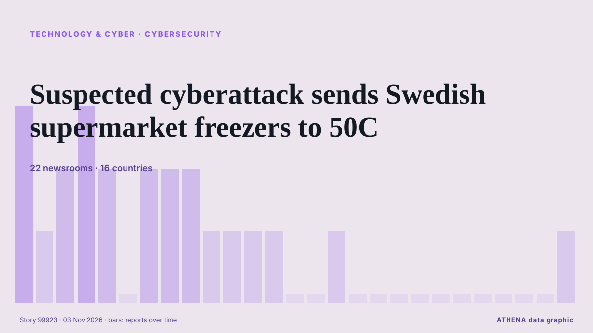

Tecnología, IA y ciberseguridad
PatrocinadoPresentado por  Cybernetics and Artificial Intelligence Lab Welcome to the Cybernetics and Artificial Intelligence Laboratory, established at the Department of Business Administration of the National and Kapodistrian University of Athens. The lab is headed by Professor Dimitrios Thomakos. The lab aims to do research that can be published in top venues. Our research uses tools and methods of Artificial Intelligence, and lies in the following areas: - Forecasting - Decision making - Cyber security - Finance We are always looking forward to collaborating with exceptional students!
Cybernetics and Artificial Intelligence Lab Welcome to the Cybernetics and Artificial Intelligence Laboratory, established at the Department of Business Administration of the National and Kapodistrian University of Athens. The lab is headed by Professor Dimitrios Thomakos. The lab aims to do research that can be published in top venues. Our research uses tools and methods of Artificial Intelligence, and lies in the following areas: - Forecasting - Decision making - Cyber security - Finance We are always looking forward to collaborating with exceptional students!
Los titulares se muestran en inglés, tal como se publicaron.

CiberseguridadSuspected cyberattack sends Swedish supermarket freezers to 50C
The temperature of freezers at several Swedish grocery stores rose sharply overnight, operators ICA and Coop said on Monday, with at least one store blaming the incident on a cyberattack. de Cyprus Mail
| 21 oct | 31 |
|---|---|
| 22 oct | 57 |
| 23 oct | 55 |
| 24 oct | 21 |
| 25 oct | 26 |
| 26 oct | 77 |
| 27 oct | 84 |
| 28 oct | 88 |
| 29 oct | 89 |
| 30 oct | 80 |
| 31 oct | 33 |
| 1 nov | 46 |
| 2 nov | 76 |
| 3 nov | 18 |
Anthropic Reports $17 Billion Quarterly Revenue Ahead of IPO
Anthropic’s revenue reached $17 billion for the three months ended Sept. de PYMNTS
UK Cyber Chief Says the UK Will Face AI Cyberattacks on Critical Infrastructure by 2028
Britain’s cyber chief says the U.K. is likely to face artificial intelligence cyberattacks on its critical infrastructure by 2028. de The Independent
South Korea to double spending on AI and chips in 2027
The country is a tech powerhouse home to Samsung Electronics and SK hynix, two of the world's three biggest makers of memory chips. de Free Malaysia Today
AI models mostly smarter than top scientists, OpenAI's Altman says
CEO says AI models capable of performing white-collar work but people must 'remain in control of the future' de Express Tribune
Donald Trump backs Nvidia's Jensen Huang amid Chinese spy plot probe
Nvidia CEO Jensen Huang warned that Europe risks falling further behind the US and China in artificial intelligence, despite its industrial base and technical talent. de DigiTimes Asia
ADNOC becomes first energy company to deploy OpenAI Frontier in landmark deal with G42
Announced at ADIPEC 2026 in Abu Dhabi, the partnership aims to value crude before extraction and slash oilfield planning times from months to hours. de Arabian Business
British adventurer completes 28-year, 50,000km walk home
A 57-year-old British adventurer, Karl Bushby, has returned home after completing a remarkable 28-year, 50,000-kilometre journey on foot across four continents without using any form of transport to… de Vanguard
Marvell strikes $115B deal for Lumentum
Marvell is acquiring Lumentum in an all-stock deal valued at $115 billion, representing $1,132 per share of Lumentum common stock. #pressrelease. de Light Reading
Merz says next German president 'must be a woman' — report
German President Frank-Walter Steinmeier's second term is due to end in March next year. de DW English
(LEAD) Lee orders review for establishment of cybersecurity task force
SEOUL, Nov. 3 (Yonhap) -- President Lee Jae Myung on Tuesday instructed official... de Yonhap (English)
Russian bomb attack on aid centre kills 26, says Ukraine
Russia bombed an aid distribution centre and neighbouring shelter in southern Ukraine, killing 26 people, Ukraine's emergency services agency said. de RTÉ News
Fridge cyberattack hits supermarkets across Europe
Grocery stores in at least five European countries saw temperatures in their cold cases soar on Monday, with several confirming they had been hit by a cyberattack similar to one three weeks ago in… de Dawn
Oracle taps investors for US$20bil to finance AI expansion
NEW YORK: Oracle plans to raise US$20 billion through bond and share sales, regulatory filings showed on Monday, as the software giant taps investors to fund its costly AI and cloud infrastructure… de New Straits Times
ClassNK updates ship cyber security guidelines to simplify compliance
ClassNK has released the second edition of its Guidelines for Cyber Security Management System for Ships, introducing clearer audit requirements and closer alignment with international cyber security… de Container News
Jack Grealish not expected to return for Everton at Newcastle after breach of club discipline
Everton midfielder Jack Grealish was dropped for Thursday night’s 3-1 Carabao Cup victory over Newcastle United due to a breach of club discipline. de Liverpool Echo
Ukrainian air raid alert app sends false warnings after being hacked
The app has sent Ukrainians false warnings that some areas of the country face nuclear and chemical threats. de ABC News Australia
Germany Says Lawmakers’ Phones May Be Hacked By Spyware
Apple sent threat alerts to German MPs and officials, and Berlin says affected iPhones should be treated as compromised in a suspected state-backed attack. de to vima
Finnish shops possibly affected by European supermarket freezer hack
Refrigeration malfunctions have been detected in some K-stores, and the cause is being investigated. de Yle News (alternative feed)
HSBC to open Hong Kong AI Institute following Singapore launch
The AI unit will work with Hong Kong University of Science and Technology as its anchor academic partner, although the bank's CEO Georges Elhedery did not disclose headcount details. de CNA (Channel NewsAsia)
Harry Styles & HeadCount Drive Major Voter Action During His MSG Residency: See the Numbers
"Harry's fans arrive ready to make their voices heard," HeadCount's executive director said. de Billboard
Hackers breach Russia's statistics agency, obtain data on Russian losses in Ukraine
Belarusian hacktivist group Cyber Partisans, together with the hacker group Silent Crow, have claimed responsibility for breaching the internal IT infrastructure of Russia's Federal State Statistics… de Ukrinform (English)
Elon Musk says 'unsustainably high' costs are the reason for Grok Bot usage limits
The SpaceX CEO said the cost of serving the AI agent was "unsustainably high relative to revenue," after some users complained about usage limits. de Business Insider
Mali and Its Neighbours in the Sahel Explained 2026
How Mali deals with Burkina Faso, Niger, Algeria, Senegal and others, from the AES bloc to fuel routes, rivers and refugees. de The Rio Times
Cathay Pacific Joins Growing List of Airlines Hit by Data Breach
Hong Kong’s Cathay Pacific Airways Ltd. said it had joined a growing list of global airlines affected by a data breach at a major software provider. de Insurance Journal
Judge says xAI must face NAACP lawsuit on data center pollution
The legal battle revolves around the AI company's operations in southern Memphis. de Engadget
Chainalysis discloses data breach from "offensive agentic techniques"
Blockchain analytics firm Chainalysis disclosed a data breach after attackers used "offensive agentic techniques" to access internal systems and tools, exposing customer names, email addresses, user… de BleepingComputer
Malicious Claude Code extension on Cursor planted SSH backdoors
A malicious version of Anthropic's Claude Code VS Code extension was distributed through Cursor's extension marketplace for approximately 11 hours on October 29, exposing up to 5,000 developers to… de BleepingComputer
North Korea touts BBQ restaurant boom, but sceptics dismiss it as propaganda
North Korea has announced more than a dozen new barbecue restaurants since September, but analysts say the fanfare is aimed at projecting prosperity while food insecurity remains widespread. de The Kathmandu Post
(LEAD) Lee vows bold investment in AI, future growth engines to boost growth potential
SEOUL, Nov. 2 (Yonhap) -- President Lee Jae Myung on Monday pledged bold investm... de Yonhap (English)
(2nd LD) S. Korea's monthly exports hit US$115.3 bln in Oct. on strong chip sales
SEOUL, Nov. 1 (Yonhap) -- South Korea's exports jumped 93.7 percent to a record ... de Yonhap (English)
Asia shares bend under AI stress; Apple earnings loom
SYDNEY: Asian share markets slipped on Monday as worries about the sustainability of the artificial intelligence (AI) investment boom loomed over the tech sector, while the high price of oil limited… de New Straits Times
OpenAI Cuts Funding Target by $10 Billion as Investor Jitters Shake AI Markets
OpenAI has cut the target for its current funding round from $30 billion to $20 billion amid investor concerns about the artificial intelligence market, The Financial Times reported Friday (Oct. de PYMNTS
‘Air-con nation’ Singapore eyes alternatives to cool down
Some buildings in the city-state are exploring active chilled beams and radiant cooling to replace compressor units that release hot air into the environment. de Free Malaysia Today